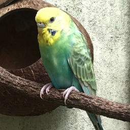
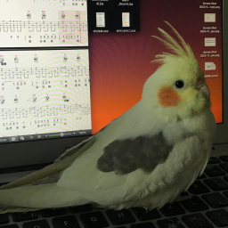

About me
I am a PhD candidate at the Centre for Complex Systems, University of Sydney. I study collective intelligence and emergent behaviour near criticality. My work explores how and why collective systems self-organise to the critical regimes, and looks at strategies to harness self-organisation for purposeful results. I am broadly interested in statistics, statistical physics, information theory and control theory.
Background
I hold a Master of Engineering (Mechatronics) from the University of Melbourne and a Bachelor of Actuarial Studies from Macquarie University. Before academia, I worked as an actuarial analyst in the reinsurance industry, focusing on risk evaluations of extreme natural hazards such as earthquakes and cyclones.
Activities
- SAPoLSN Philosophy Meets the Life Sciences Workshop. Sydney, Australia. August 2026.
- The Complexity, Criticality and Computation Symposium C3-2026. Heron Island, Australia. January 2026.
- Santa Fe Institute 2025 Complex Systems Summer School (CSSS). Santa Fe, NM, USA. June-July 2025.
- Eleventh International Conference on Guided Self-Organization. Tübingen, Germany. February 2025.
- Workshop on Critical Phenomena and Topological Data Analysis. Newcastle, Australia. November 2024.
- Emerging Aspirations in Complex Systems Workshop (best presentation award). Sydney, Australia. August 2024.
Meet My Friends
In my free time, I enjoy hiking, playing table tennis, strumming ukulele, and spending time with my flock!

Boltz

Elsa

Gyoza

Udon

Oolong

Sai

Dodo